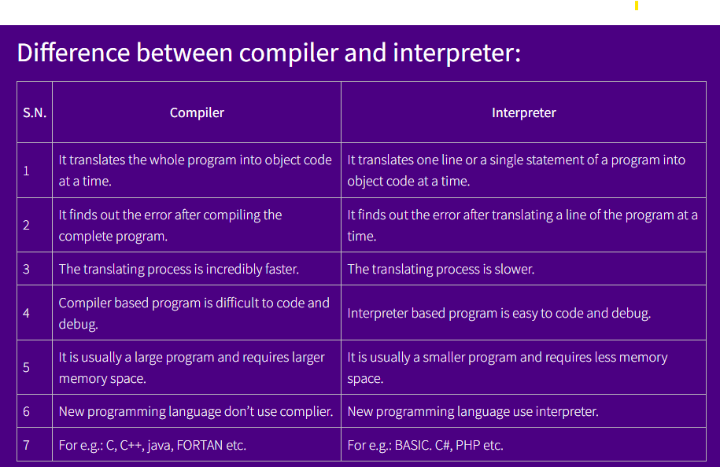

Programming Concepts and Logic
In computing, a program is a specific set of ordered operations for a computer to perform. In the modern computer that John von Neumann outlined in 1945, the program contains a one-at-a-time sequence of instructions that the computer follows. Typically, the program is put into a storage area accessible to the computer.
Programming Language
A programming language is a set of instructions used to communicate with a computer to perform tasks. It consists of keywords, variables, operators, loops, and other elements, using numbers, special symbols, and alphanumeric values. The process of writing code is known as programming, and the person who writes programs is called a programmer.Types of Programming Languages
Low-Level Language: Machine-dependent and harder to use, requiring detailed system knowledge.Machine Level Language (1GL): Uses binary (0's and 1's) understood by the processor, offering high execution speed but difficult to write and debug.
Assembly Language (2GL): Uses mnemonics (e.g., ADD, SUB) instead of binary but still requires knowledge of system architecture. It’s faster than high-level languages but more complex to write and debug.
High-Level Language (HLL): Closer to human languages (like English), machine-independent, and easier to write and debug. Requires a compiler or interpreter to convert to machine code.
Examples: C, C++, Python, JavaScript.
Advantages: Easier to write, debug, and understand.
Machine-independent. Faster development.
Disadvantages: Slower execution than low-level languages.
Classifications of High-Level Languages:
Procedural Oriented Language (3GL): Focuses on procedure and logic. Examples: C, FORTRAN, QBasic. It’s easier to debug but slower in execution and offers less data security.Object-Oriented Language (4GL): Focuses on data rather than procedure, with features like encapsulation, inheritance, and security. Examples: C#, Java, C++. It’s more user-friendly but slower than 3GL.
Natural Language (5GL): Uses normal communication language, still in development. Example: PROLOG. Easier to debug, but execution is slow and difficult for hardware-specific tasks.
Language Translator/Processor: Converts programs from high-level or assembly language into machine-readable code.
Assembler: Converts assembly language into machine code. Compiler: Translates an entire high-level program into machine code at once (e.g., C, C++).
Interpreter: Translates a high-level program one statement at a time, making debugging easier but slower in execution (e.g., BASIC, PHP).
